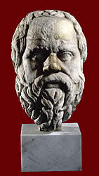

Sokrates
470/69 - 399 BC

Sokrates was a Greek philosopher who had a great influence on Athenian society and later philosophers.
He had an unusual way of sharing his views. He would question the people around him very carefully to show the holes or contradictions in their thinking.
He was sentenced to death in 399BC for 'corrupting the young'. He died by drinking hemlock, which is a type of poison.
|